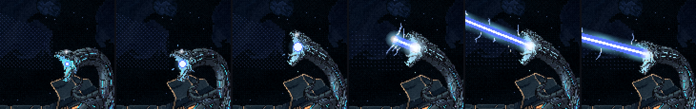
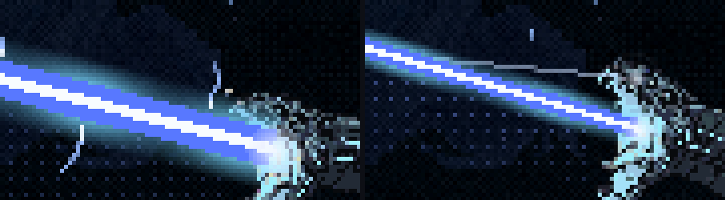
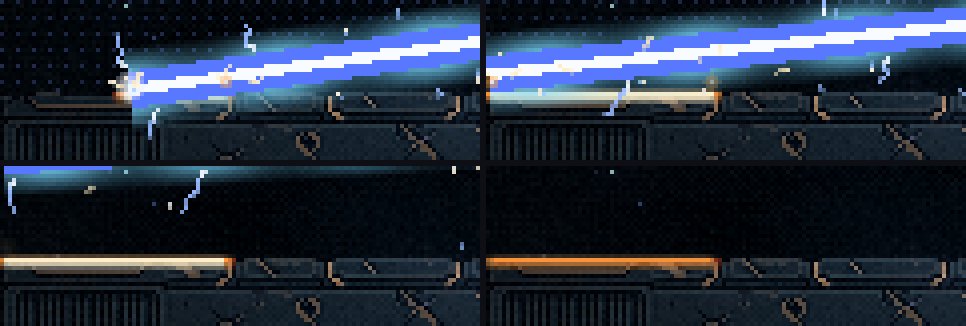
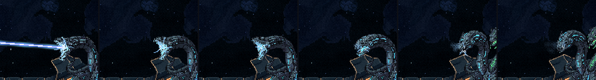

A Serpente: os efeitos do raio
01/11/2026 · rodada 12 das habilidades (o raio da azul) · nada foi commitado.
Você aprovou os gestos da cabeça ("Gostei dos gestos, pode seguir para os efeitos"). Esta rodada põe os efeitos que ficaram combinados a partir da análise. Todos são só visuais: usam um sorteio próprio e não mudam onde o raio machuca.
A maquete
Carga e disparo

- Energia entrando na boca: faíscas nascem num anel em volta da boca e caem para dentro cada vez mais rápido.
- Uma esfera pequena cresce na boca enquanto ela carrega, tremendo um pouco.
- As luzes da cabeça acendem com a carga: só os pixels de luz ciano da própria cabeça e do pescoço azul. Ficam acesas no disparo e apagam na recuperação.
- O raio não aparece inteiro: uma frente de energia, com uma ponta brilhante, corre da boca até a borda em 0,09 s (0,05 s na salva). Só o que já foi desenhado machuca.
- O clarão: uma explosão de luz na boca no primeiro instante, e a tela dá um tranco de 2 px nos raios grandes.

O casco

- Mudei o começo da fatia de baixo para cima do casco (antes ela só raspava nele): o raio corta a chapa primeiro e depois sobe. O casco é a única coisa no campo que ele pode atingir. Nenhuma nave fica abaixo de 143 px, então a esquiva não muda. Se preferir como era, volto.
- No ponto do corte saem faíscas em linha reta (vácuo, sem gravidade) e pequenas explosões de metal.
Depois do disparo

- Descargas elétricas saem das mandíbulas e vão diminuindo. Elas seguem a cabeça durante o tranco. Depois de cada tiro da salva são curtas; depois do raio grande e do último tiro da salva, são fortes.
- O resíduo: um vapor sai da boca na direção do último disparo, reto, e vai se espalhando e sumindo. No vácuo ele não sobe.
Tirei um anel de luz que corria para fora da boca no disparo: parecia um círculo desenhado, e no vácuo não há nada para a luz iluminar no caminho.
Medidas
| folga do manequim | rodada 11 | agora |
|---|---|---|
| fatia de cima | 20,4 px | 20,4 px |
| fatia de baixo | 12,5 px | 12,5 px |
| salva (o tiro mais apertado) | 6,7 px | 6,7 px |
| pontos do raio fora do caminho desenhado | 0 | 0 |
A frente de energia só deixa o raio chegar um pouco depois, então algumas folgas da salva até subiram (por exemplo, 6,8 → 10,2 px). A nave parada continua sendo atingida. O som fica para depois do balanceamento.
Para você decidir
- Os efeitos: a intensidade está boa, ou algum está demais ou de menos? (a esfera, as luzes da cabeça, o brilho do raio, o clarão, o tranco da tela)
- A fatia de baixo começando sobre o casco, para o raio cortar a chapa: fica?
- Com o raio pronto: sigo para as animações das outras cabeças (a verde soltando o gás, a laranja carregando e faiscando), do mesmo jeito que fiz a azul?